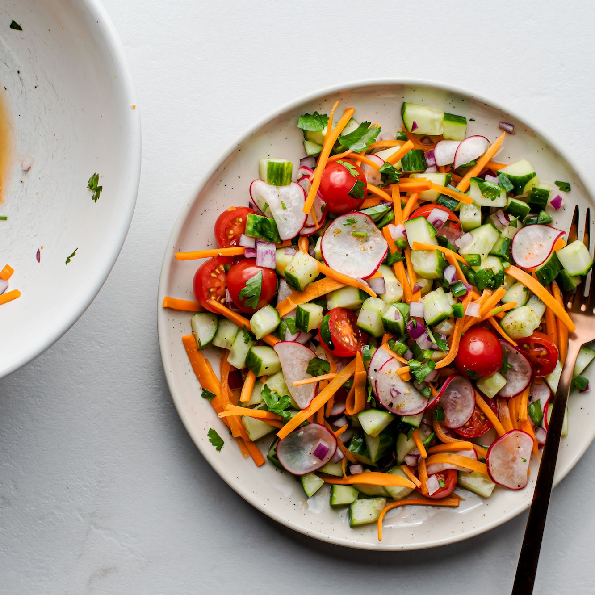

Benefits Of Vegetable Salad
A mixture of raw usually green leafy vegetables (as lettuce) combined with other vegetables (as tomato and cucumber) and served with a dressing.
Steps to make Vegetable
- Choose A Base. You can't have a salad without a base.
- Add Protein. Adding protein to your salad is an easy way to ensure that the meal is going to be filling.
- Choose Your Fruits And Vegetables.
- Pump Up The Flavor.
- Add Dressing.